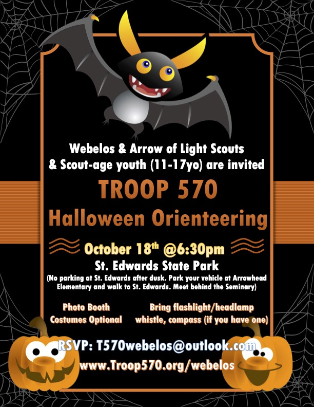

Fourth and fifth grade boys and girls are invited to our ghoulishly fun Halloween Orienteering Event at St. Edwards State Park (note location has changed) on Monday, October 18th from 6:30-8:15pm. Model after Cascade Orienteering Club's annual Vampire-O, this is a giant field game, where participants need to find as many checkpoints as possible without being bitten by the vampires that roam the land. It's a combo of Treasure Quest and a Game of Tag or Capture The Flag. We will form groups of 2 or 3 and the game will be about 45 minutes.
Bring a flashlight or headlamp, compass (if you have one) and a whistle. Dress appropriately for the weather. There will be a photo booth and flashing trinkets. Costume is optional.
Check-in is 6:30pm at the picnic tables behind St. Edwards seminary's gymnasium. There is no parking at St. Edwards after dusk. Please park vehicles at Arrowhead Elementary and walk to the park. We will walk back together as a group to Arrowhead Elementary after the event.
Don't miss this awesome event! We hope to see you Monday evening!!
www.Troop570.org
John Nangle
Boy Troop Scoutmaster
Nena Chaing
Girl Troop Scoutmaster